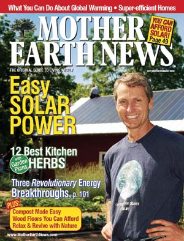

News From Mother: Talk Back To Your Mother
By the Mother Earth News editors
February/March 2007
The Editorial Advisory Group is the coolest thing to happen to Mother Earth News since recycled paper. Over the past year or so, thousands of you have joined the group, taking short online surveys about the magazine every few weeks. The surveys ask you to pick your favorite cover images, rate your interest in specific article ideas, or rank what you like and don’t like in our pages.
Your enthusiasm for these surveys has been incredible. We’ve always had active and open communication with our readers. But this is an exciting new way for our loyal readers to help shape the magazine. Quite simply, the Editorial Advisory Group has revolutionized the connection between the readers and the magazine’s editors.
For example, whereas we once used our instincts and the advice of experts to decide which specific solar power topic we should cover next, we can now ask you about several ideas and then prioritize assignments. Instead of choosing cover photos with just our editorial wisdom (some might call it guessing), we can show you a handful of options and, within hours, have a clear sense of what you like best. And last year, when we wanted feedback on our departments, we had the group score each one, in addition to new ideas. The scores were close - we learned you’re pretty happy with our current mix, but would like more coverage of DIY projects, renewable energy and country skills.
The data we get from the surveys is always useful. Sometimes it’s surprising. One particularly noteworthy story: For our October/November 2006 cover, we posed contributing editor Steve Heckeroth with thin-film solar panels he had just installed on Editor in Chief Cheryl Long’s barn. Matthew Stallbaumer, our art director, diligently framed the shot and took a series of dynamite photos; Steve was smiling with solar delight. Just like that, we had a great cover done early and ready to go (see photo).
Or so we thought. Late in the process, someone asked “have you tested the cover?” We hadn’t, only because we were convinced we already had a clear winner. Nevertheless, we quickly prepared an alternate, showing just the solar barn (see photo). We asked the advisory group which image they preferred, but expected the results would confirm our plan.
You probably see where this is going: The solar barn won two to one. So we changed direction, just in time to send it to the printer. Judging by the newsstand sales for that issue, as well as for every other cover we’ve surveyed, we (you) made the right call.
The Editorial Advisory Group has proved so useful that “test it” has become a mantra around the office, the common answer to everyday questions and curiosities. So, to those of you who take the time to give us your opinions, we can’t thank you enough. Each passing survey improves the magazine. Your input is priceless and your zeal inspires us. To those of you who aren’t taking the surveys, sign up! Everyone is welcome, and this is the best way to help us make the magazine exactly what you want it to be. We’d love to have you join the conversation. Click here to join the Editorial Advisory Group.
- Mother
 CHERYL LONG Mother Earth News readers chose this cover image as their favorite for the October/November 2006 issue. |
 MATTHEW T. STALLBAUMER This is the cover the Mother Earth News editors almost printed for the October/November 2006 issue, that is, until they surveyed the Editorial Advisory Group and found out they wanted something else. |
|